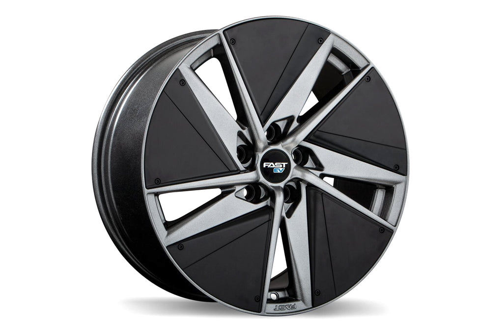

Engine:

History of the Tesla Engine Tesla was first launched in 2003 by Marc Tarpenning and Martin Eberhard, who had the goal of developing an electric sports car. Elon Musk, who is perhaps the most recognized part of the startup, served as chairman starting in 2004. The company released its first vehicle in 2008. It was the electric Roadster and was capable of going 245 miles on a single charge. This was by far the most impressive vehicle to date in electric vehicles. From the start, the motor was able to go from 0 to 60 in 4 seconds and could reach speeds of 125 miles per hour. This electric motor was powered by lithium-ion cells. Those are the same types of cells used in most computer batteries. In 2012, the company launched the Model S. It had three battery options and was able to go from 0 to 60 in just over 4 seconds while hitting 130 miles per hour. The Model X, which is a crossover vehicle, was built in 2015. It provided an SUV-like setup with a much more affordable price point. The Model 3 was launched in 2017. It is able to produce a total output of 450 horsepower. It also produces 471 lb-ft. It is able to do this because there is an electric motor for each axle. It also has a larger battery and all-wheel drive, increasing its overall performance. Tesla vehicles use what is called an induction motor. This is a three-phase modulating inverter driver motor. The Tesla Roadster has an AC induction motor. Some vehicles also have a brushless DC Motor or BLDC motor. The motors in Tesla are manufactured by the company – they do not use other branded motors in their vehicles.
Wheels:

They're much quieter.
The lack of an internal combustion engine already makes it so that EVs lack the roar of a typical gas-powered
car.
But Tesla has also taken steps to reduce the noise levels of their tires, using a layer of sound-absorbing
polyurethane foam within the tire.
They're made with more durable materials.
Tesla, along with other EVS, have a few key differences from standard cars that make regular tires a bad fit. For
one thing, EV motors allow for nearly 100% of the vehicle’s torque to be available immediately, meaning that there’s
more power behind the wheels when you go to accelerate.
This can result in a lot more wear on the tires when speeding up or slowing down, and cause uneven wear on the front
and back wheels.
They'll last you longer.
Despite the few downsides of Tesla tires, the high quality demanded by the mechanics of Tesla EVs means that their
tires often last longer than those on a standard car. Their superior durability ensures that they’re more
puncture-resistant than regular tires, and reduces the tendency of the tread to wear down over time.
Batteries:

By now most people know that the Tesla Roadster is powered by Lithium ion (Li-ion) batteries. But here are a few things about our batteries you might not have heard. Our battery system – or Energy Storage System, as we like to call it – is comprised of 6,831 individual Li-ion cells. It's roughly the size of a storage trunk and weighs about 900 pounds. Nestled securely in the back of the Tesla Roadster, the battery system is the secret behind our four second 0-60 mph acceleration and phenomenal driving range. To achieve this kind of performance, we were meticulous about our battery technology selection. Batteries are not perfect – no doubt about it. Though market forces continue to drive improvements in batteries, the Li-ion battery system in the Tesla Roadster represents the very best of today's commercially available battery technology. These Li-ion batteries are a whole lot better than Nickel-Metal Hydride (NiMH) cells and lead acid cells found in EVs of yore, but they too have their limitations. One of the most difficult challenges in battery design is increasing energy density while also maximizing battery life span. Li-ion chemistries have achieved better combinations of these parameters than anything that has come before. Yet there is still a tradeoff between energy and life, even within the family of Li-ion.